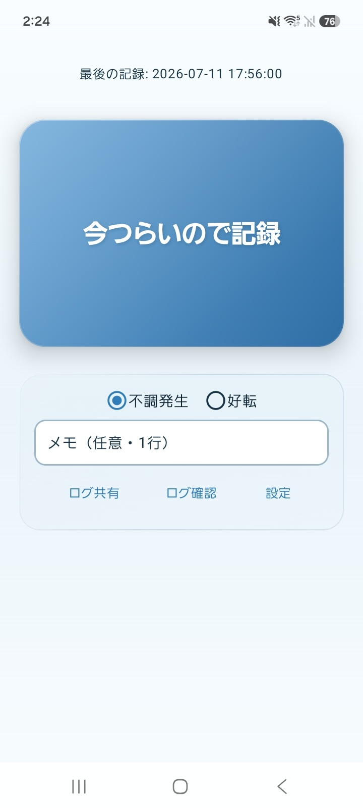

ENVIRONMENT & CONDITION
体調環境ログ
開発中 / 検証用
体調変化と気圧・湿度・照度などの環境情報を記録し、不調時と好転時の条件を比較するアプリです。
DEVELOPMENT PREVIEWRECORD

MAIN FUNCTIONS
- 記録体調・メモと環境データ
- 状態不調・好転・中立ログ
- 分析時系列と相関を比較
- 出力JSONL／テキスト出力
RELEASE RECORD初版 2026年6月 / 最新 改訂版 v2（2026-07-12）
記録と振り返りのために
PDFマニュアルを見る↗
気象・環境データや分析結果は、日常の記録を整理し、振り返るための参考情報です。